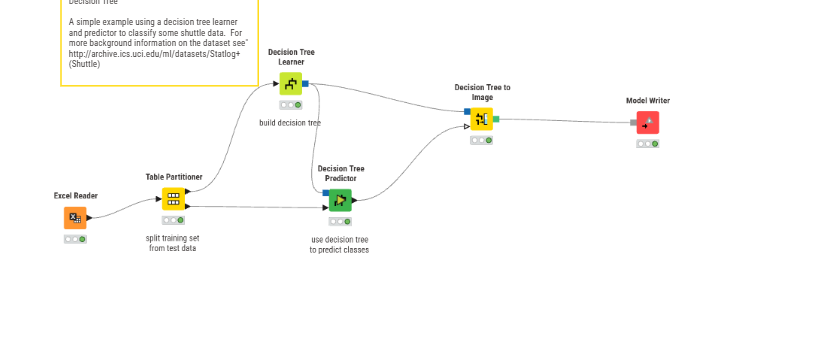
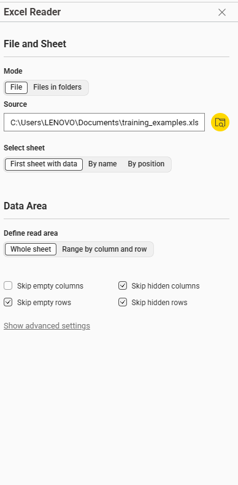
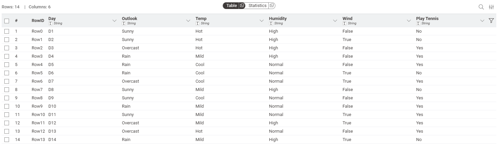
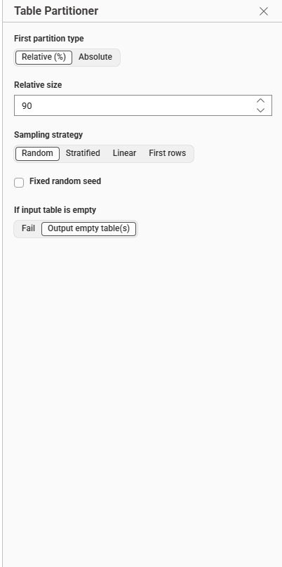
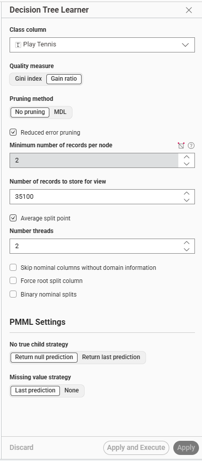
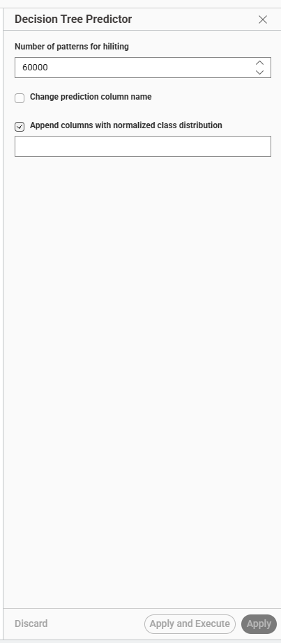
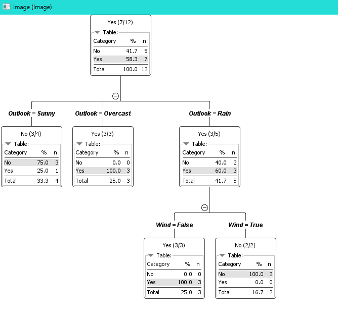
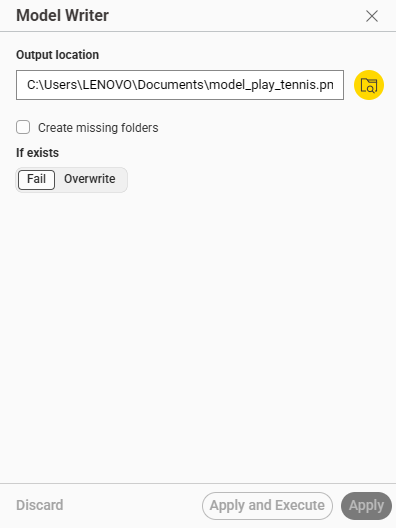

Pertemuan 11#
Decision Tree & Perhitungan Gain Ratio#
Pengertian#
Decision Tree (Pohon Keputusan) adalah algoritma machine learning (berjenis supervised learning) yang memecah sekumpulan data menjadi bagian-bagian yang lebih kecil berdasarkan serangkaian aturan logika (IF-THEN), hingga mencapai sebuah kesimpulan atau prediksi akhir.
1. Komponen Utama Decision Tree#
Root Node (Akar): Titik awal pohon yang berada di paling atas. Memuat atribut (fitur) yang secara perhitungan dinilai paling penting dalam membagi keseluruhan data.
Internal Node (Titik Cabang): Pertanyaan atau pengujian terhadap suatu atribut turunan (misalnya: “Apakah kecepatan angin kencang?”).
Branch (Cabang/Garis): Jalur yang menghubungkan antar node, merepresentasikan jawaban atau nilai batas dari atribut yang diuji.
Leaf Node (Daun): Titik akhir dari pohon yang tidak memiliki cabang lagi. Ini mewakili label kelas, hasil prediksi, atau keputusan akhir (misalnya: “Bermain Tenis: Yes”).
2. Rumus Matematika (Gain Ratio)#
Dalam membangun Decision Tree (seperti pada algoritma C4.5), pohon dibentuk dengan memilih atribut yang memiliki nilai Gain Ratio tertinggi. Berikut adalah tahapan perhitungannya:
A. Entropy#
Entropy mengukur tingkat ketidakteraturan (impurity) atau keacakan dari sebuah kumpulan data (\(S\)). \(Entropy(S) = \sum_{i=1}^{c} -p_i \log_2 (p_i)\) Keterangan:
\(c\) = Jumlah kategori/kelas target (contoh: Yes dan No).
\(p_i\) = Proporsi data pada kelas ke-\(i\) terhadap total keseluruhan data di node tersebut.
B. Information Gain#
Mengukur seberapa besar sebuah atribut (\(A\)) mampu mengurangi nilai Entropy. \(Gain(S, A) = Entropy(S) - \sum_{v \in Values(A)} \frac{|S_v|}{|S|} Entropy(S_v)\) Keterangan:
\(Values(A)\) = Nilai-nilai cabang yang mungkin dari atribut \(A\) (misal atribut Cuaca memiliki nilai Cerah, Hujan, Mendung).
\(|S_v|\) = Jumlah data pada cabang \(v\).
\(|S|\) = Jumlah total data sebelum dipecah.
C. Split Info (Split Information)#
Mengukur seberapa luas dan seragam penyebaran data saat dipecah oleh atribut (\(A\)). Ini berfungsi sebagai penalti agar algoritma tidak selalu memilih atribut yang memiliki terlalu banyak cabang kecil. \(SplitInfo(S, A) = -\sum_{v \in Values(A)} \frac{|S_v|}{|S|} \log_2 \left( \frac{|S_v|}{|S|} \right)\)
D. Gain Ratio#
Merupakan hasil akhir yang digunakan untuk menentukan atribut mana yang akan dijadikan node (akar/cabang). Atribut dengan Gain Ratio tertinggi akan dipilih. \(GainRatio(S, A) = \frac{Gain(S, A)}{SplitInfo(S, A)}\)
3. Kelebihan dan Kekurangan#
Kelebihan:
Sangat transparan, mudah dipahami, dan dapat diinterpretasikan secara visual.
Mampu menangani kombinasi tipe data kategorikal (teks) dan numerik (angka).
Tahan terhadap data pencilan (outlier).
Kekurangan:
Sangat rentan terhadap Overfitting (pohon terlalu rumit dan menghafal data latih). Hal ini biasanya diatasi dengan teknik Pruning (pemangkasan).
Kurang stabil; sedikit perubahan pada data latih bisa mengubah bentuk struktur pohon secara keseluruhan.
TUGAS Langkah-Langkah Membangun Decision Tree di KNIME#
(Studi Kasus: Dataset Play Tennis) Dokumen ini menjelaskan alur kerja (workflow) pembuatan model Decision Tree menggunakan KNIME berdasarkan hasil tangkapan layar yang telah dibuat. Setiap langkah akan dijelaskan prosesnya (“Apa”) dan alasannya (“Kenapa”).

1. Membaca Dataset (Node: Excel Reader)#

klik untuk unduh training_examples.xls
Apa yang dilakukan:
Menghubungkan node Excel Reader ke file training_examples.xls yang ada di dalam komputer (kolom Outlook, Temp, Humidity, Wind, Play Tennis).

Kenapa dilakukan: Ini adalah langkah paling awal. KNIME membutuhkan sumber data mentah untuk diproses. Node ini bertugas membaca tabel dari Excel agar bisa dibaca oleh algoritma machine learning di langkah selanjutnya.
2. Membagi Data Training & Testing (Node: Table Partitioner)#

Apa yang dilakukan: Membagi total data (14 baris) menjadi dua bagian. Pada pengaturan yang ada, Relative size disetel ke 90%.
Port atas (Training): Mengambil 90% data (sekitar 12 baris).
Port bawah (Testing): Mengambil sisa 10% data (sekitar 2 baris).
Kenapa dilakukan: Dalam machine learning, model tidak boleh diuji menggunakan data yang sama dengan yang digunakan untuk melatihnya (bisa menyebabkan bias atau model terlihat terlalu sempurna/hafal). Oleh karena itu, sebagian besar data (90%) dipisahkan agar model “belajar”, dan sisa datanya (10%) disimpan sebagai soal ujian/tes.
3. Melatih Model (Node: Decision Tree Learner)#

Apa yang dilakukan:
Ini adalah “otak” dari proses ini. Data dari port atas Table Partitioner (12 baris) dimasukkan ke node ini. Pengaturannya disesuaikan:
Class column:
Play Tennis(target yang ingin ditebak).Quality measure:
Gain ratio(menggunakan rumus perhitungan entropi).Pruning method:
No pruning& UncheckReduced error pruning.Min records per node:
2.
Kenapa dilakukan: Node ini bertugas menghitung Information Gain dan membangun struktur pohonnya.
Karena datanya sangat sedikit (hanya 12 baris latih), fitur pemangkasan harus dimatikan (No Pruning) dan batas minimal data diturunkan (Min records = 2) agar algoritma mau membuat cabang (jika tidak, algoritma akan berhenti dan pohon hanya jadi 1 kotak karena menganggap data tidak cukup valid untuk dipecah).
4. Melihat Hasil Pohon (Node: Decision Tree View)#

Apa yang dilakukan:
Menghubungkan kotak biru (berisi model struktural) dari Learner ke node Decision Tree View atau Decision Tree to Image.
Kenapa dilakukan: Pohon keputusan pada dasarnya adalah kumpulan aturan logika IF-THEN matematis. Node ini menerjemahkan matematika tersebut menjadi visual grafik/gambar pohon. Dari gambar, terlihat bahwa Outlook menjadi Root (akar/pertanyaan pertama), yang kemudian bercabang lagi ke Wind untuk menentukan keputusannya (Yes/No).
5. Melakukan Prediksi / Tes (Node: Decision Tree Predictor)#

Apa yang dilakukan: Node ini memiliki 2 input:
Kotak Biru (Model): Berasal dari
Decision Tree Learner.Segitiga Hitam (Data Uji): Berasal dari port bawah
Table Partitioner(data 10% yang belum pernah dilihat model).
Kenapa dilakukan: Node ini menguji kecerdasan model. Ia akan mengambil data sisa tadi, menghilangkan kolom target “Play Tennis”, lalu menyuruh model menebak jawabannya berdasarkan aturan pohon yang sudah dibuat. Hasil akhirnya berupa kolom baru bernama “Prediction (Play Tennis)” yang bisa dicocokkan dengan jawaban aslinya.
6. Menyimpan Model (Node: Model Writer)#

klik untuk unduh model_play_tennis.pmml
Apa yang dilakukan:
Mengambil kotak biru dari Learner dan menyimpannya ke memori penyimpananan dalam format file PMML (contoh: model_play_tennis.pmml).
Kenapa dilakukan:
Jika di kemudian hari ada data cuaca baru (misalnya 100 baris baru) dan ingin menebak keputusan akhirnya, tidak perlu melatih ulang datanya dari awal (Excel Reader -> Learner). Cukup panggil file model ini menggunakan node Model Reader, dan langsung disambungkan ke Predictor. Ini sangat menghemat waktu dan daya komputasi.